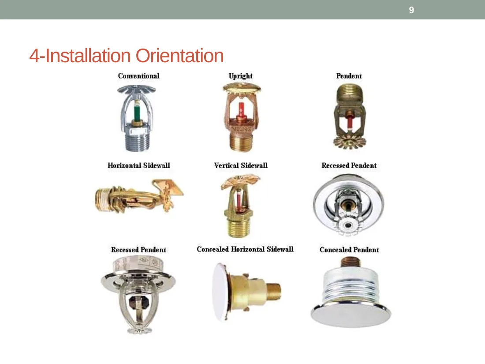
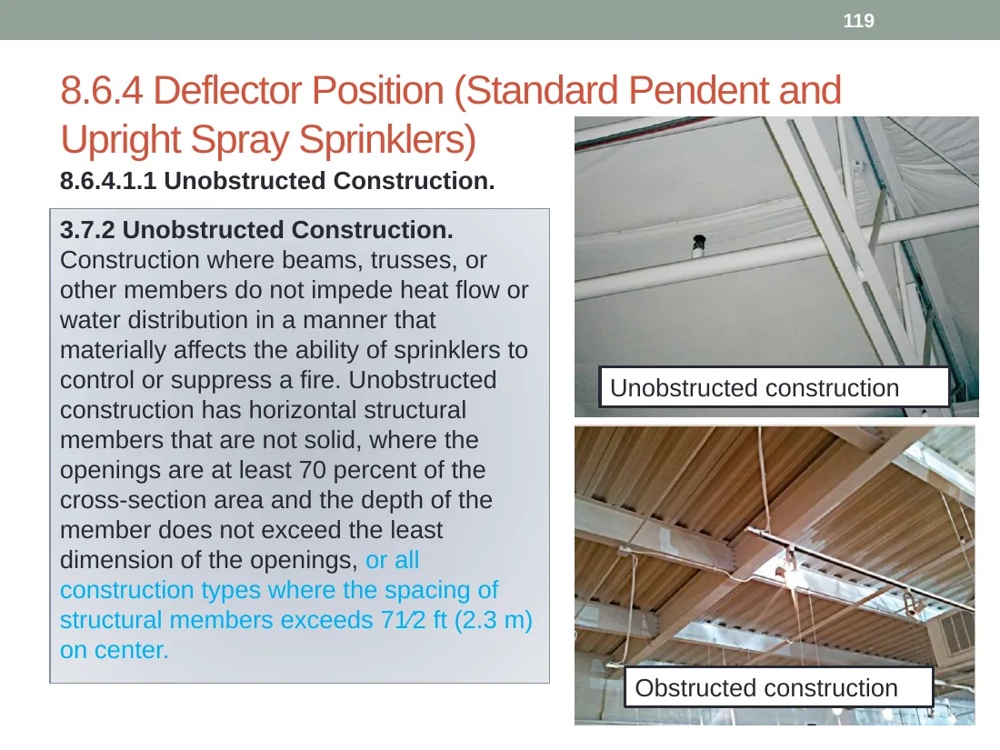
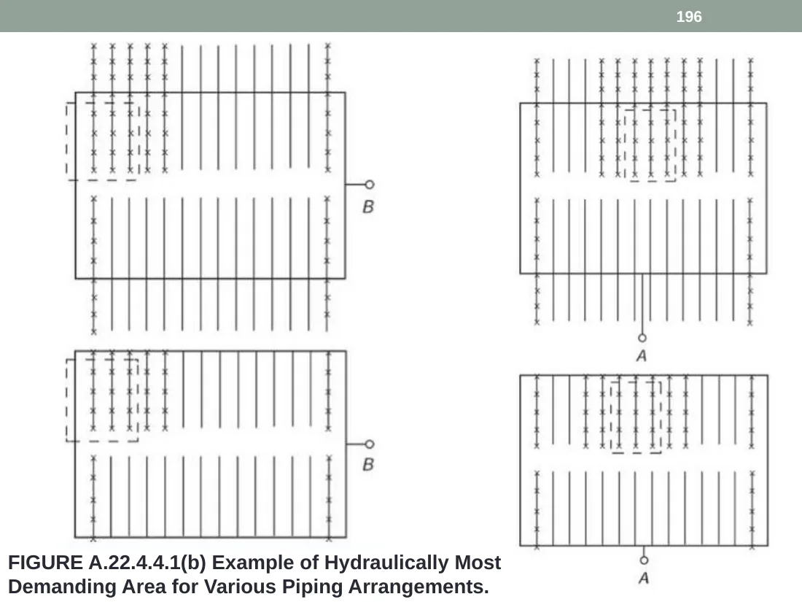

مبانی
کنترل حریق، سرکوب حریق و نقش آب
Fire Control رشد حریق را محدود و مواد مجاور را خیس میکند؛ Fire Suppression نرخ آزادسازی حرارت را بهشدت کاهش داده و از رشد مجدد جلوگیری میکند. قطرات ریز سریعتر حرارت جذب میکنند و قطرات بزرگتر نفوذ بیشتری در Plume دارند.
محدودکردن اندازه حریق و کنترل دمای گازهای سقف.
رساندن آب کافی به سطح سوخت برای کاهش شدید شدت آتش.
خنکسازی با قطرات آب و بخار حاصل از تبخیر.
همه اسپرینکلرها همزمان باز نمیشوند؛ هر اسپرینکلر عنصر حرارتی مستقل دارد و در اثر شرایط حرارتی موضعی فعال میشود.
انتخاب تجهیز
ویژگیهایی که اسپرینکلر را تعریف میکنند
حساسیت حرارتی
سرعت پاسخ عنصر حرارتی؛ پاسخ سریع و استاندارد باید مطابق کاربری و Listing انتخاب شوند.
رده دمایی
باید از بیشینه دمای عادی نزدیک سقف بالاتر باشد تا فعالشدن ناخواسته رخ ندهد.
K-Factor
ضریب تخلیهای که ارتباط دبی و فشار را مشخص میکند.
جهت نصب
Pendent، Upright، Sidewall، Recessed و Concealed الگوی پاشش و محدودیت متفاوت دارند.

انتخاب سیستم
چهار نوع اصلی سیستم اسپرینکلر
لولهتر
آب تا پشت اسپرینکلر تحت فشار است؛ سریع، ساده و مناسب فضای بدون یخزدگی.
لولهخشک
شبکه با هوا یا نیتروژن پر است؛ پس از عملکرد اسپرینکلر، شیر خشک باز و آب وارد میشود.
پیشعملگر
تشخیص مکمل ورود آب را کنترل میکند؛ مناسب فضاهای حساس به خسارت آب.
سیلابی
خروجیها باز هستند و با فرمان سیستم تشخیص، آب در کل ناحیه تخلیه میشود.
مبنای طراحی
طبقهبندی خطر فقط نام کاربری نیست
در طبقهبندی باید قابلیت و مقدار مواد سوختنی، نرخ آزادسازی حرارت، فرآیند، ارتفاع و نحوه انبارش و وجود مایعات قابل اشتعال بررسی شود.
Light Hazard
بار سوختنی کم و نرخ آزادسازی حرارت پایین.
Ordinary Hazard 1
مواد متوسط و آتش با شدت متوسط.
Ordinary Hazard 2
بار سوختنی بیشتر یا فرآیند با حرارت بالاتر.
Extra Hazard
آتش سریع، گردوغبار یا مایعات قابل اشتعال.
استفاده از یک مثال فهرستشده بدون کنترل شرایط واقعی فضا. طبقهبندی باید با شرایط پروژه و ویرایش مصوب تطبیق داده شود.
شبکه و جانمایی
از اجزای لولهکشی تا کنترل موانع
مساحت پوشش، فاصله تا دیوار، فاصله بین اسپرینکلرها و Listing باید با هم کنترل شوند.

محاسبات
محاسبات هیدرولیکی از نقطه بحرانی تا منبع
چگالی طراحی ضربدر مساحت تخصیصیافته.
فشار لازم از P = (Q/K)² به دست میآید.
تابع دبی، قطر داخلی، ضریب C و طول معادل.
در ساختمان بلند میتواند مؤلفه غالب فشار باشد.

از اسپرینکلر یا گره بحرانی شروع کنید؛ دبی و فشار، افت لوله و اتصالات و تغییر ارتفاع را گرهبهگره تا منبع جمع کنید.
کنترل یادگیری
چکلیست طراحی و آزمون کوتاه
آزمون پنجسؤالی
0 / 5۱. در فضای بدون یخزدگی معمولاً کدام سیستم سادهتر است؟
۲. رابطه دبی و فشار اسپرینکلر چیست؟
۳. Preaction بیشتر برای چه فضایی مطرح است؟
۴. مساحت پوشش مفهومی کدام است؟
۵. طبقه خطر چگونه تعیین میشود؟
منابع و حدود استفاده
این بخش با دستهبندی و بازنویسی فایل «آشنایی با سیستم اطفای حریق اسپرینکلر» و ارائه NFPA 13 (2010 edition) ساخته شده است. اسلایدهای منتخب برای آموزش مفهومی استفاده شدهاند و متن کامل استاندارد بازنشر نشده است.